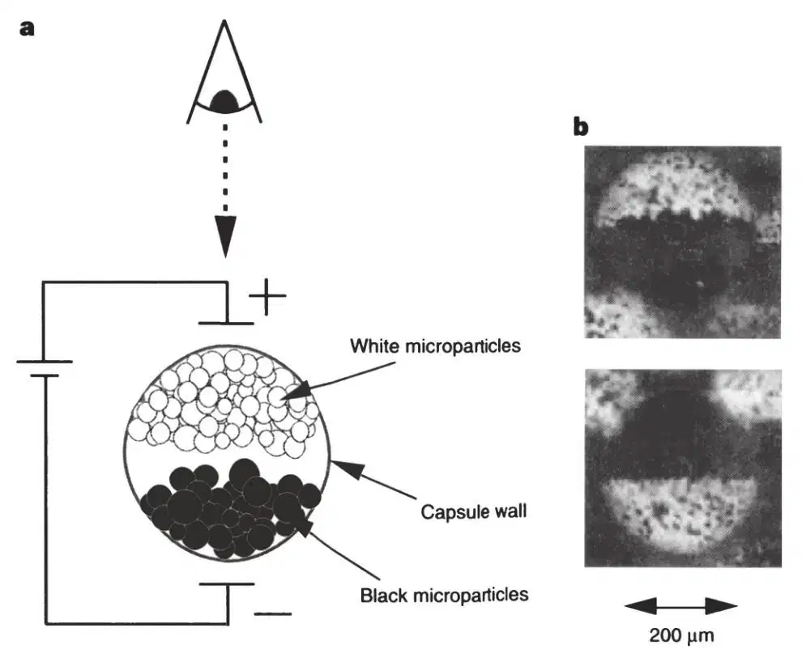
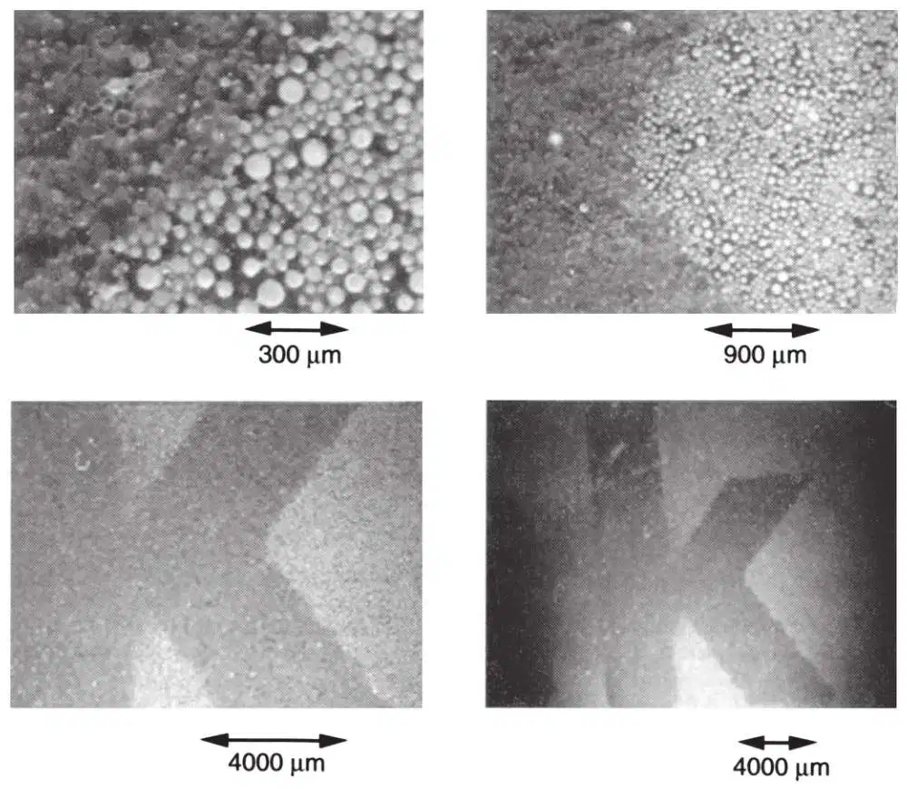
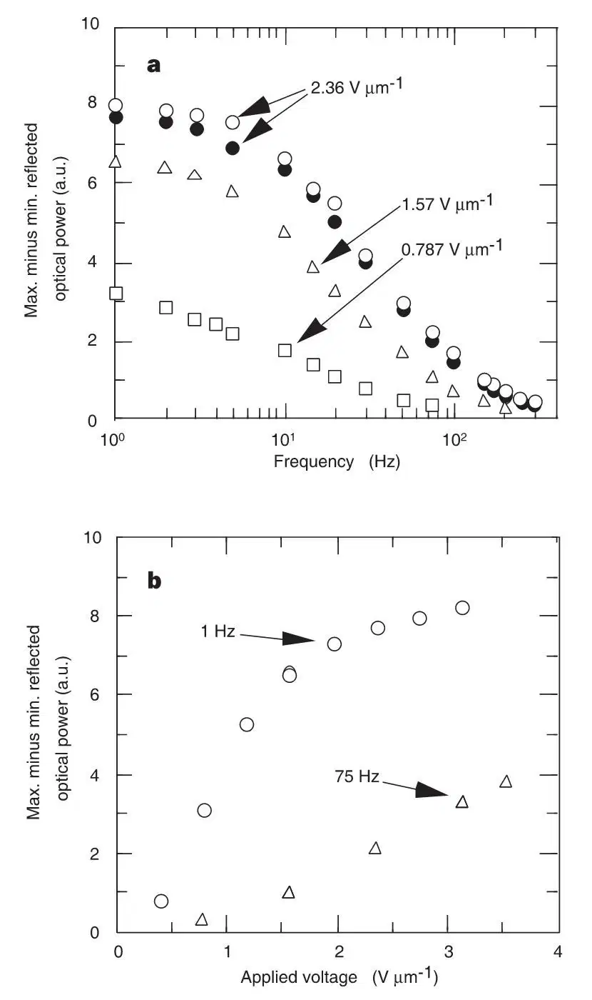

中文
中文B. Comiskey et al.
Editor’s Note
The printed word retains some advantages over electronic displays. The subliminal flickering of screens tires the eye, and they are fragile, expensive, energy-hungry, and lose contrast in bright ambient light. This has stimulated a quest for “electronic paper” that combines the benefits of printed paper with the convenience and versatility of electronic information systems. Here researchers at MIT’s Media Lab report one of the first candidate materials: a layer of transparent microcapsules on a flexible plastic sheet. Each capsule contains white and black pigment particles that can be drawn to the top surface by an electric field. This foundational paper led to a spinoff company, E-Ink, which, in partnership with microelectronics companies, now sells a range of portable display devices. 中文
It has for many years been an ambition of researchers in display media to create a flexible low-cost system that is the electronic analogue of paper. In this context, microparticle-based displays1-5 have long intrigued researchers. Switchable contrast in such displays is achieved by the electromigration of highly scattering or absorbing microparticles (in the size range 0.1–5 μm), quite distinct from the molecular-scale properties that govern the behaviour of the more familiar liquid-crystal displays6. Microparticle-based displays possess intrinsic bistability, exhibit extremely low power d.c. field addressing and have demonstrated high contrast and reflectivity. These features, combined with a near-lambertian viewing characteristic, result in an “ink on paper” look7. But such displays have to date suffered from short lifetimes and difficulty in manufacture. Here we report the synthesis of an electrophoretic ink based on the microencapsulation of an electrophoretic dispersion8. The use of a microencapsulated electrophoretic medium solves the lifetime issues and permits the fabrication of a bistable electronic display solely by means of printing. This system may satisfy the practical requirements of electronic paper. 中文
PREVIOUS approaches to fabricating particle-based displays have been based on rotating bichromal spheres in glass cavities1 or elastomeric slabs2,3, and electrophoresis in glass cavities4,5. The advantageous optical and electronic characteristics of microparticle displays, as compared to liquid-crystal displays, result from the ability to electrostatically migrate highly scattering pigments such as titanium dioxide (n=2.7), yielding a difference in optical index of refraction with the surrounding dielectric liquid of Δn=1.3 and black pigments with very high absorption and hiding power. This results in a very short scattering length (~1 μm) and a correspondingly high reflectivity and contrast, similar to that of ink on paper. For comparison, typical index differences in a scattering-mode liquid crystal are less than Δn=0.25 (ref. 9). 中文
Despite these favourable attributes, microparticle displays at present suffer from a number of shortcomings. These include, in the case of the bichromal sphere system, difficulty in obtaining complete rotation (and thus complete contrast) due to a fall-off in the dipole force close to normal angles and difficulty of manufacture. In the case of electrophoretic systems, the shortcomings include reduced lifetime due to colloidal instability10. Finally, bistable display media of all types, to date, are not capable of being manufactured with simple processes such as printing. (Although recent results have been obtained in ink-jetting of electroluminescent doped polymer films for organic light-emitting structures11, such emissive non-bistable displays do not meet a key criterion of “electronic paper”, namely the persistent display of information with zero power consumption.) 中文
To realize a printable bistable display system, we have synthesized an electrophoretic ink by microencapsulating droplets of an electrophoretic dispersion in individual microcapsules with diameters in the range of 30–300 μm. Figure 1a indicates schematically the operation of a system of microencapsulated differently coloured and charged microparticles, in which one or the other species of particles may be migrated towards the viewer by means of an externally applied electric field. Figure 1b shows cross-sectional photomicrographs of a single microcapsule addressed with positive and negative fields. 中文

Fig. 1. Electrophoretic microcapsule. a, Schematic illustration of microencapsulated electrophoretic image display (white and black microparticles system). The top transparent electrode becomes positively charged, resulting in negatively-charged white microparticles migrating towards it. Oppositely charged black microparticles move towards the bottom electrode. b, Photomicrograph of an individual microcapsule addressed with a positive and negative field. 中文
The microencapsulated electrophoretic system was synthesized using the following process. The internal phase of the microcapsules was composed of a mixed dispersion of black and white microparticles in a dielectric fluid. To obtain white microparticles, a suspension of rutile titanium dioxide (specific gravity=4.2) in molten low-molecular-weight polyethylene was atomized. A similar process was used to prepare black microparticles with an inorganic black pigment. The resulting particles were sieved to obtain a dry powder with an average diameter of 5 μm. Alternatively, smaller monodisperse particles, with a diameter less than 1 μm, were prepared chemically. The polyethylene serves to reduce the specific gravity of the particles (typically to ~1.5) and present a modified surface chemistry for charging purposes. The particles in suspension acquire a surface charge due to the electrical double layer12. The black and white particles have different zeta potential (and hence different mobility) due to the electroconductivity of the black pigment13. These microparticles are then dispersed in a mixture of tetrachloroethylene (specific gravity, 1.6) and an aliphatic hydrocarbon (specific gravity, 0.8) which is specific-gravity-matched to the manufactured particles. In the case where the particles are designed with charges of opposite sign, they are prevented from coagulation by providing a physical polymeric adsorbed layer on the surface of each particle which provides strong inter-particle repulsive forces10. Alternatively, a single particle system (white microparticles) dispersed in a dyed (Oil Blue N) dielectric fluid was prepared. 中文
This suspension, which in typical electrophoretic displays would be interposed between two glass electrodes, was then emulsified into an aqueous phase and microencapsulated by means of an in situ polycondensation of urea and formaldehyde. This process produces discrete mechanically strong and optically clear microcapsules. The microcapsules are optionally filtered to obtain a desired size range, and are subsequently washed and dried. 中文
Microcapsules (white particle in dye) were prepared and dispersed in a carrier (ultraviolet-curable urethane) and subsequently coated onto a transparent conductive film (indium tin oxide (ITO) on polyester). Rear electrodes printed from a silver-doped polymeric ink were then applied to the display layer. Figure 2 shows a series of microphotographs at different magnifications in which the letter “k” has been electronically addressed in the electronic ink. The sample shown was sieved to have a mean capsule size of 40±10 μm yielding a capsule resolution of ~600 dots per inch. By going to a system using structured top electrodes (or address lines as opposed to a continuous electrode), we were able to fractionally address single microcapsules, yielding an addressable resolution of ~1,200 dots per inch. 中文

Fig. 2. Electrophoretic ink. Photomicrographs of 200-μm-thick film of electronic ink (“white particles in dye” type) with a capsule diameter of 40±10 μm (top view). The electronically addressed letter “k” is white, other areas are blue. 中文
In addition to making a flexible and printable system, microencapsulating the electrophoretic dispersion has solved a longstanding problem with electrophoretic displays, namely limited lifetime due to particle clustering, agglomeration and lateral migration10. This is because the dispersion is physically contained in discrete compartments, and cannot move or agglomerate on a scale larger than the capsule size. In ink samples that we have prepared to date, >107 switching cycles have been observed with no degradation in performance. We have measured contrast ratios of 7∶1 with 35% reflectance and a near-lambertian viewing characteristic. Using the same measurement system, we measured newspaper at 5∶1 contrast and 55% reflectance. We have observed image storage times of several months, after which the material may be addressed readily. 中文
In Fig. 3a we show maximum minus minimum reflected optical power (non-normalized contrast) versus drive frequency for several different applied fields; open symbols indicate data taken from low to high frequency, filled symbols show data from high to low frequency. Figure 3b shows plots of contrast versus applied field for different frequencies. The data in Fig. 3 were obtained for a 200-μm film of electronic ink (of the type “white particles in dye”), with capsules of diameter 40±10 μm on ITO polyester with a silver-ink rear electrode. 中文

Fig. 3. Properties of a 200-μm-thick film of electronic ink (“white particles in dye” type) with capsule diameter of 40±10 μm. a, Maximum minus minimum reflected optical power (contrast) versus drive frequency for several different applied fields (open symbols, data taken from low to high frequency; filled symbols, from high to low frequency). b, Plot of contrast versus applied field for different frequencies. 中文
We may calculate the particle mobility, zeta potential and charge per particle as follows. The low-frequency asymptote in Fig. 3a indicates that at sufficiently slow driving frequency there is time for the internal particles to make a full traverse of the capsule, after which there is no further contribution to the contrast. Thus the cusp of the sigmoid in Fig. 3a may be taken to indicate the frequency (5 Hz) at which the particle just traverses a round trip (2×40 μm=80 μm) in the microcapsule yielding a velocity of v=400 μm s－1.The Reynolds number is given by Re= vrη－1 where is the internal fluid density, r is the particle radius, η is the internal fluid viscosity and v is the particle velocity. For the present system we have =1.6×10－15 kg μm－3, v=400 μm s－1, r=0.5 μm, and η=0.8 ×10－9 kg μm－1 s－1; and Re=0.0004 ≪ 1 and the flow is laminar14. The transient time to establish the laminar flow may be estimated from the Navier–Stokes equation to be τss=(1 / 9)r2η－1=55 ns. Thus for time-scales of interest, the particle mobility is given as μ=v / E=ϵζ / 6πη=q / 12πrη where ϵ is the dielectric constant of the internal fluid, ζ is the zeta potential of the particles and q is the charge per particle. Thus for our system we have μ=169 μm2 V－1 s－1 , ϵ=2.5×8.85×10－6 kg μm s－2 V－2, ζ=120 mV, and q=2.6 ×10－18 C=16e－. The very small charge per particle indicates the mechanism for “field-off” bistability. Particle / capsule-wall and particle / particle binding dominate the particle / particle repulsion coming from the very small charge per particle. Other mechanisms for “field-off” bistability include charge redistribution and minimization. 中文
vrη－1 where is the internal fluid density, r is the particle radius, η is the internal fluid viscosity and v is the particle velocity. For the present system we have =1.6×10－15 kg μm－3, v=400 μm s－1, r=0.5 μm, and η=0.8 ×10－9 kg μm－1 s－1; and Re=0.0004 ≪ 1 and the flow is laminar14. The transient time to establish the laminar flow may be estimated from the Navier–Stokes equation to be τss=(1 / 9)r2η－1=55 ns. Thus for time-scales of interest, the particle mobility is given as μ=v / E=ϵζ / 6πη=q / 12πrη where ϵ is the dielectric constant of the internal fluid, ζ is the zeta potential of the particles and q is the charge per particle. Thus for our system we have μ=169 μm2 V－1 s－1 , ϵ=2.5×8.85×10－6 kg μm s－2 V－2, ζ=120 mV, and q=2.6 ×10－18 C=16e－. The very small charge per particle indicates the mechanism for “field-off” bistability. Particle / capsule-wall and particle / particle binding dominate the particle / particle repulsion coming from the very small charge per particle. Other mechanisms for “field-off” bistability include charge redistribution and minimization. 中文
Figure 3a indicates the compromise between switching speed and contrast; Fig. 3b shows the compromise between applied field and contrast. In both sets of curves, the high-contrast asymptote indicates the regime in which the particles have made full traverse of the capsule, and further time or applied field has no further consequence. Two-particle (black / white particles) systems, as opposed to “single particle in dye” systems, relax these trade-offs due to the absence of exponential light absorption in the dye case due to dye interstitially present between white particles. 中文
In order to efficiently address a large number of pixels, matrix addressing is required. Matrix addressing in turn requires that either the contrast material (passive matrix) or an underlying electronic layer (active matrix) possess a threshold in order to prevent crosstalk between address lines. Typically, the display material may support passive matrix addressing for small numbers of pixels15. Larger numbers of pixels require the nonlinearity of an electronic element as implemented in active matrix addressing16. Active matrix structures, typically formed from polysilicon on glass, are expensive and would obviate many of the advantages of a flexible low-cost paper-like display. Our group has recently demonstrated an all-printed metal–insulator–metal (MIM) diode structure17 capable of forming the active matrix for electrophoretic ink, which should enable us to drive high-pixel-count sheets of electrophoretic ink while maintaining the ease of fabrication and low-cost structure provided by the ink material itself. Work by other groups may also be of use in this endeavour18. We believe that such systems will open up a new field of research in printable microscopic electro-mechanical systems. Coupled with recent advances in printable logic, such technology offers the prospect of fundamentally changing the nature of printing, from printing form to printing function. 中文
(394, 253-255; 1998)
Barrett Comiskey, J. D. Albert, Hidekazu Yoshizawa & Joseph Jacobson
Massachusetts Institute of Technology, The Media Laboratory, 20 Ames Street, Cambridge, Massachusetts 02139-4307, USA
Received 8 December 1997; accepted 18 May 1998.
References:
1. Pankove, J. I. Color Reflection Type Display Panel (Tech. Note No. 535, RCA Lab., Princeton, NJ, 1962).
2. Sheridon, N. K. & Berkovitz, M. A. The gyricon–a twisting ball display. Proc. Soc. Information Display 18(3,4), 289-293 (1977).
3. Sheridon, N. K. et al. in Proc. Int. Display Research Conf. (ed. Jay Morreale) L82–L85 (Toronto, 1997).
4. Ota, I., Honishi, J. & Yoshiyama, M. Electrophoretic image display panel. Proc. IEEE 61, 832-836 (1973).
5. Dalisa, A. L. Electrophoretic display technology. IEEE Trans. Electron Devices ED-24(7), 827-834 (1977).
6. Castellano, J. A. & Harrison, K. J. in The Physics and Chemistry of Liquid Crystal Devices (ed. Sprokel, G. J.) 263-288 (Plenum, New York, 1980).
7. Fitzhenry-Ritz, B. Optical properties of electrophoretic image displays. IEEE Trans. Electron Devices ED-28(6), 726-735 (1981).
8. Comiskey, B., Albert, J. D. & Jacobson, J. Electrophoretic ink: a printable display material. In Digest of Tech. Papers 75-76 (Soc. Information Display, Boston, 1997).
9. Okada, M., Hatano, T. & Hashimoto, K. Reflective multicolor display using cholesteric liquid crystals. In Digest of Tech. Papers 1019-1026 (Soc. Information Display, Boston, 1997).
10. Murau, P. & Singer, B. The understanding and elimination of some suspension instabilities in an electrophoretic display. J. Appl. Phys. 49, 4820-4829 (1978).
11. Hebner, T. R., Wu, C. C., Marcy, D., Lu, M. H. & Sturm, J. C. Ink-jet printing of doped polymers for organic light emitting devices. Appl. Phys. Lett. 72, 519-521 (1998).
12. Fowkes, F. M., Jinnai, H., Mostafa, M. A., Anderson, F. W. & Moore, R. J. in Colloids and Surfaces in Reprographic Technology (eds Hair, M. & Croucher, M. D.) (Am. Chem. Soc., Washington DC, 1982).
13. Claus, C. J. & Mayer, E. F. in Xerography and Related Processes (eds Dessauer, J. H. & Clark, H. E.) 341-373 (Focal, New York, 1965).
14. Landau, L. D. & Lifshitz, E. M. Fluid Mechanics (Pergamon, New York, 1959).
15. Ota, I., Sato, T., Tanka, S., Yamagami, T. & Takeda, H. Electrophoretic display devices. In Laser 75 145-148 (Optoelectronics Conf. Proc., Munich, 1975).
16. Shiffman, R. R. & Parker, R. H. An electrophoretic image display with internal NMOS address logic and display drivers. Proc. Soc. Information Display 25.2, 105-115 (1984).
17. Park, J. & Jacobson, J. in Proc. Materials Research Soc. B8.2 (Mater. Res. Soc., Warrendale, PA, 1998).
18. Service, R. F. Patterning electronics on the cheap. Science 278, 383 (1997).
Correspondence and requests for materials should be addressed to J.J. (e-mail: jacobson@media.mit.edu).